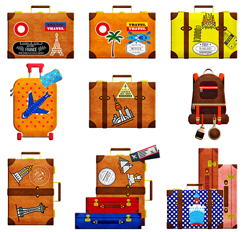
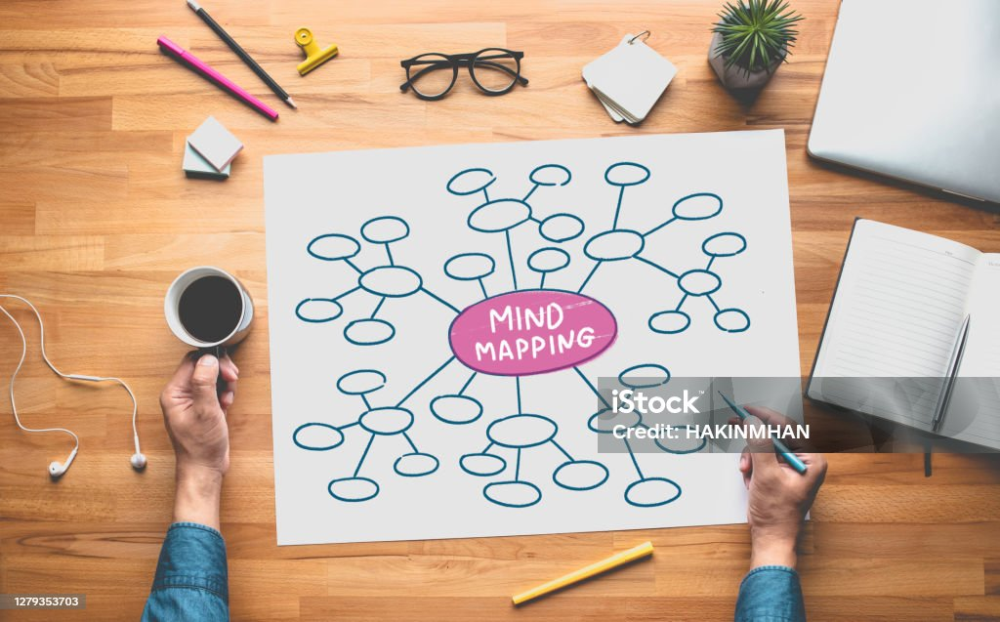

Introducción al concepto de turismo
Mientras el turista se apresura por lo general a regresar a su casa al cabo de algunos meses o semanas, el viajero, que no pertenece más a un lugar que al siguiente, se desplaza con lentitud durante años de un punto a otro de la tierra.
Paul Bowles. El cielo protector. Alfaguara
Desde la Antigüedad, muchas personas han viajado por el mundo movidas por diferentes motivos, como la curiosidad, el comercio, la exploración o el deseo de conocer nuevas culturas. Personajes históricos como Heródoto recorrieron gran parte del mundo conocido para recoger información y escribir sus obras. Otros viajeros, como Marco Polo, realizaron largos viajes en busca de nuevas rutas comerciales y dejaron relatos que despertaron el interés por lugares lejanos. También destacaron Ibn Battuta, que recorrió amplios territorios de África y Asia, Lady Mary Wortley Montagu, que describió la vida en el Imperio Otomano, o Alexander von Humboldt, famoso por sus viajes científicos y de exploración.
En la actualidad, los grandes exploradores han sido sustituidos, en gran medida, por millones de turistas que viajan durante su tiempo libre para descansar, conocer otros lugares y disfrutar de nuevas experiencias. El turismo se ha convertido así en un fenómeno de masas y en una de las actividades económicas más importantes del mundo, capaz de mover cada año a millones de personas y generar enormes beneficios económicos.

Turismo es el desplazamiento de personas, de carácter temporal, desde su lugar de residencia a otro espacio, por razones de ocio. No debemos confundirlo con los movimientos migratorios en los que el desplazamiento se produce por necesidad o para intentar mejorar las condiciones de vida.
Esta actividad ha crecido exponencialmente en los últimos cincuenta años asociada a varios cambios sociales:
- La aparición del tiempo libre y de ocio, consecuencia de jornadas laborales más reducidas y vacaciones pagadas.
- Mayor nivel de renta, ya que la población dispone de más dinero que puede gastar en vacaciones y en el disfrute de su tiempo libre.
- La revolución de los transportes, que ha permitido mayor movilidad y accesibilidad, a precios más asequibles.
- La sociedad de consumo y la publicidad, que nos oferta una enorme variedad de actividades.
Todos estos factores han favorecido que el turismo se haya convertido en un auténtico fenómeno de masas. Según datos de la Organización Mundial del Turismo (ONU Turismo), en 2025 se superaron los 1.500 millones de desplazamientos internacionales en todo el mundo. Alrededor de esta actividad se ha desarrollado una gran industria turística que incluye transportes, hoteles, restaurantes, agencias de viajes, actividades de ocio y otros muchos servicios destinados a satisfacer las necesidades de los viajeros y hacer más cómoda su experiencia. (untourism.int)
Además, el turismo no deja de crecer y diversificarse. Hoy en día las personas viajan más, durante más veces al año y a destinos cada vez más lejanos. Los lugares turísticos atraen a los visitantes por sus paisajes naturales, su patrimonio histórico y cultural o la combinación de ambos elementos. Por ello, existen diferentes tipos de turismo según las características del destino y las actividades que se realizan:
- Turismo de sol y playa, típico de las zonas costeras y muy importante en países mediterráneos como España.
- Turismo de montaña, deporte y aventura, relacionado con actividades como el senderismo, la escalada o los deportes de nieve.
- Turismo cultural, centrado en la visita a monumentos, museos, ciudades históricas o grandes eventos culturales.
- Turismo religioso, basado en peregrinaciones y visitas a lugares sagrados.
- Turismo de ocio, vinculado a parques temáticos, festivales, conciertos o espectáculos.
- Turismo de salud y bienestar, relacionado con spas, balnearios y actividades para el cuidado físico y mental.
- Turismo de negocios, asociado a congresos, ferias y reuniones profesionales.
- Turismo rural, que busca el contacto con la naturaleza y la vida en pequeños pueblos, y que ha crecido mucho en los últimos años.
¡Es tu turno!
- Duración
- 20:00
- Lugar/Agrupamiento
- Casa - aula ordinaria
En el siguiente vídeo, aprenderás las características del sector servicios y del turismo, comprendiendo sus tipos y cuáles son las principales zonas turísticas del mundo. Para poder verlo, accede a Google Classroom, donde se te habrá asignado una tarea. A la misma vez que lo ves, podrás ir respondiendo a una serie de cuestiones relacionadas.
Ahora es momento de colaborar todos en el aula. Vamos a llevar a cabo un mapa mental colaborativo a través de nuestra pantalla digital.
